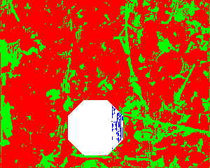
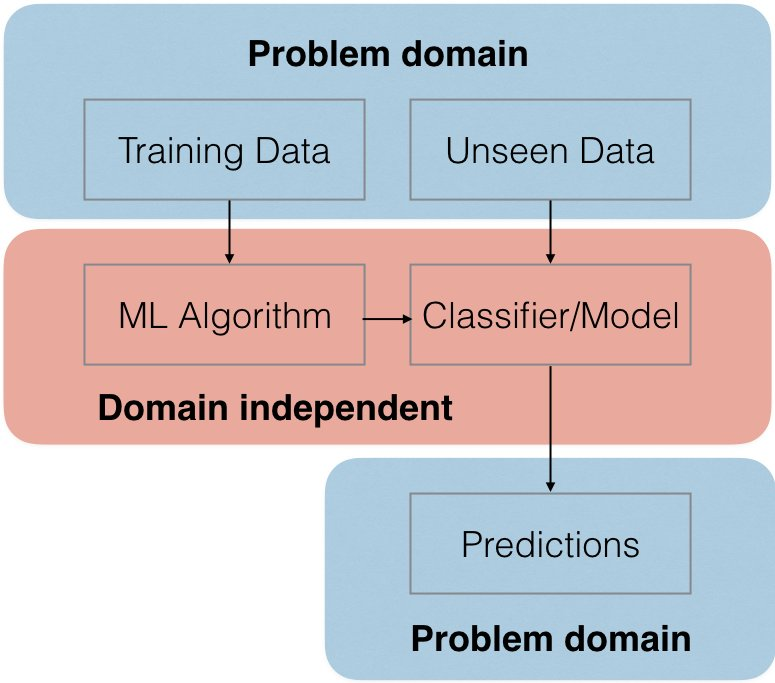
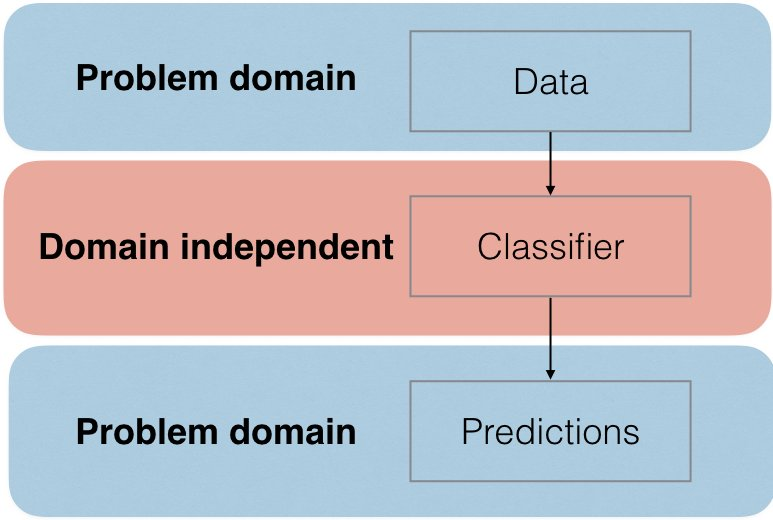
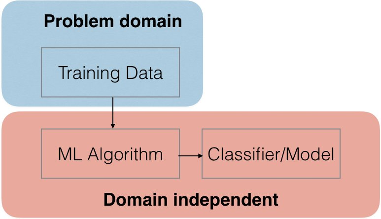

Introduction to Machine Learning and Data Mining
What is Machine Learning?
Algorithms, methods, and techniques for learning and prediction based upon data
What is Machine Learning in Practice?
Use existing data (if an offline task), obtain data (if an online task)
Analyze the data, build a model, update an existing model
Use the knowledge/model to understand the data or make predictions
Primary Forms of Machine Learning
Supervised learning
Unsupervised learning
Reinforcement learning
and More
Examples of Supervised Learning
| Problem domain | Class (output) |
|---|---|
| Handwritten character recognition | letters/ASCII |
| Face detection | Bounding box/features of person |
| Spam detection | True/False |
| Protein classification | Protein type/attributes |
| Astronomical phenomena | Orientation/Location/Star type |
Handwritten Character Recognition

Face Detection

Detecting Camouflage
|  | |
| Prey in the wild | Predator classification |
Two Important Forms of Supervised Learning: Classification
Predicting what discrete category some observation belongs to based on features of the observation.
Is an email spam? Return a boolean.
What character is this? Return a value from a list.
Two Important Forms of Supervised Learning: Regression
Make a prediction of a continuous value, often a number.
What is the value of a stock price? Some positive floating point.
What equation represents a collection of numbers?
Examples of Unsupervised Learning
| Problem domain | Class (output) |
|---|---|
| Tweets | Topic of message |
| All images on the internet | What is in the image? |
| Gene arrays | What genes are coexpressed? |
| Marketing surveys | What groups of consumers are there? |
Examples of Reinforcement Learning
| Problem domain | Class (output) |
|---|---|
| Robot control | Determine a sequence of actions to carry out (drive a car, fly a quadcopter) |
| Game playing | Play backgammon, play as a NPC in games |
| Elevator control | Move people between floors as efficiently as possible |
Getting into Supervised Learning
The Data
How do we represent the data?
Data is problem specific
Let's start by looking at the data (from Assignment 1) with some easy to use program like Excel or LibreOffice
What Does a Classifier Do?
Map some attributes (input) to a predicted class label (output)
It is a function! Just like a function you program, the internals of the function may be very different depending on the type of classifier
What Does the ML Algorithm Do?
Using the training data, create a classifier that predicts outputs from inputs correctly
Even you could be the ML algorithm
What Will Be Helpful to Know?
Programming
Math: Probability, Statistics, Calculus, Linear Algebra, Information Theory
Assignment 1
Posted in the assignments section
Due: Jan 27
What Comes Next?
Nearest Neighbors/KD-Trees
Decision Trees